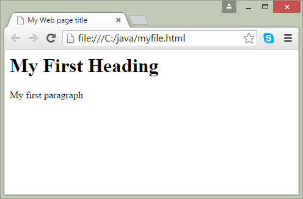

1.2 URL (Uniform Resource Locator)
You have undoubtedly used URLs to access HTML pages from the Web. An http URL may be broken down as shown below:
http://beginwithjava.com:80/servlet-jsp/introduction/url.html |---| |----------------||--||--------------------------------| 1 2 3 4
The first part, http, is the protocol name. It is followed by a colon (:) and two slash characters (//).
The second part is the hostname of the computer on which the document resides.
The third part, which is optional, is the port number. Internet hosts have a certain number of ports. HTTP usually runs on port 80, but this is not necessary. If it is running on port 80 in the machine you named in the hostname part, then you don't need to specify a port number. If it is running on a different port, a colon (:) followed by the port number is required to point to that port.
The fourth part is the path to the document you are requesting. The path is a set of characters separated by slashes (/).
Create static web page using HTML
With HTML, you can create your own web page. HTML is the core technology in which all pages are written. HTML use markup tags to describe web pages. You can use notepad to type HTML code. Here is an example code.
<html>
<head>
<title>My Web page title </title>
</head>
<body>
<h1>My First Heading</h1>
<p>My first paragraph</p>
</body>
</html>
Save this file use .html extension. When you open this file in a browser, it displays as web page. The browser does not display Html tag (Keywords surrounded by angle brackets) but use the tags to interpret the content of the page.
In previous code example,
The text between <html> and </html> describes the Web page.
The text between <body> and </body> is the visible page content.
The text between <h1> and </h1> is displayed as a heading.
The text between <p> and </p> is displayed as paragraph.
Output will look like this:
